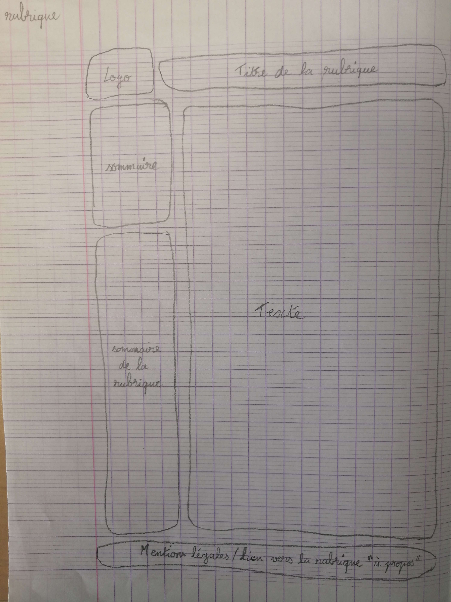

BAUDOIN Mathieu
RUBEN Glorian
Sujet : Warhammer40k
Les maquettes de notre groupe :
Déroulement du projet
Pour travailler à plusieurs en distanciel, nous avons utilisé GitHub
Le site est déployé sur le serveur webetu de l'Université de Lorraine à cette adresse